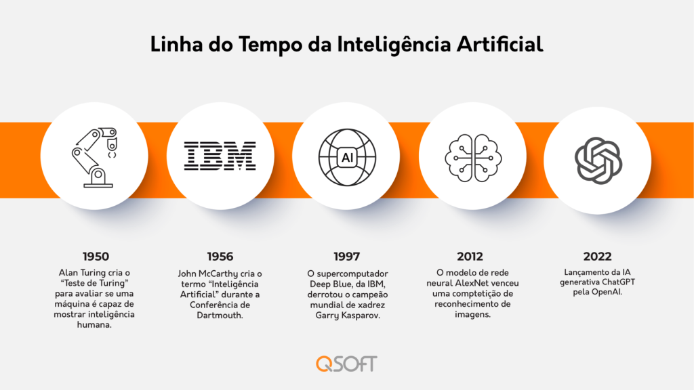

O Início da IA
A Inteligência Artificial teve seu nascimento oficial em 1956, durante a conferência de Dartmouth College, organizada por John McCarthy, Marvin Minsky, Nathaniel Rochester e Claude Shannon. Este evento é considerado o ponto de partida da IA como campo acadêmico.

Avanços nas Décadas Seguintes
Desde então, a IA passou por fases de entusiasmo e estagnação (os chamados "invernos da IA"), mas sempre evoluindo. Com o tempo, surgiram redes neurais, algoritmos genéticos, e mais recentemente, o deep learning.

O Presente e o Futuro
Hoje, a IA está presente em diversos setores: saúde, transporte, segurança, finanças e mais. A expectativa é que ela continue se expandindo, com modelos cada vez mais poderosos, como o ChatGPT, transformando o mundo.
